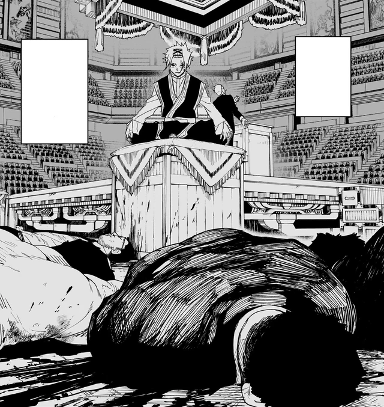

Summary
Shinuchi is listed at the 208th Rakuzaichi. Two hundred years of auction, one Storehouse, a blade the Kamunabi filed as locked. Yura cracked the seal and put Magatsumi on the block. The listing is the Hishaku spending a masterpiece the way Sojo spent a customer’s sword: someone else will bleed for the experiment. Chihiro goes in because the seventh blade is not enough if the first blade is for sale.
He meets Hakuri, the discarded Sazanami, and Hiyuki, the Kamunabi’s flame. The auction house is a family business that treats children as stock. Hakuri was beaten into believing he had no talent. The clan’s Isou, a burial-force technique, would not answer him because he was scattering his own spirit energy. Hiyuki is assigned to problems the Kamunabi cannot file. Flame Bone is why she can stand in front of Shinuchi without becoming a footnote. Tafuku’s calm is the other half of the act.
The auction
The Rakuzaichi is civilization as Kyora defines it: polite, absolute, two centuries of people sold as inventory. The Tou, Soya, Tamaki, Enji, Tenri, are the household military. The building is not just a hall. It is a subspace. The Storehouse, the Kura, is where the family head warehouses loot and human beings. Chihiro’s problem is not winning a bid. It is finding a door that is also a person.
Volume 3, Knight of Darkness, is the arrival: Hiyuki, the estate, Enten surrendered on purpose. Volume 4, Equal, is Hakuri waking. Volume 5, Fervent, is the Storehouse war and the twitch of Magatsumi. The jackets get crowded because the auction is a crowd. Chihiro, Kyora, Hakuri, Hiyuki. Shinuchi heat.
Hakuri
Hakuri is the son the family called empty. He is not. When he chose Chihiro over the Rakuzaichi, the seal on that self-doubt broke. He is one of two people in clan history to wield both Isou and the Storehouse. He remembers a woman the auction killed, and the architecture answers him. The discarded son inherited the building.
Once the Storehouse opens in him he can register a person and their charged possessions, then move blades across the country. That single trick is why the Kamunabi bother to keep Chihiro later: the bearers can be un-armed and re-armed without a siege. It is also why the Hishaku hunt him after the building falls. The auction was architecture. Hakuri is the building that walks.
Enten scouts the Storehouse
Chihiro lets the clan take Enten so the blade can scout the Kura on its own charge. The seventh sword is not only a cut. It is a household object that can go where the son cannot yet walk. On auction day he walks in with Cloud Gouger’s stump and a rebuilt arm. The dead weather kit still has a few charges of Mei. He will spend them to take Enten back. The last inch of Kuregumo does not vanish unused.
Inside the Kura the fight is a race against a subspace that Kyora still thinks he owns. Tenri dies on a half-stable Datenseki stone trying to impress his father. Sojo’s fake eyes last a few minutes, long enough to kill a son who wanted to be useful. Chihiro spends the last of Cloud Gouger, recovers Enten, and corners the eleventh auctioneer in a collapsing warehouse of people.
Hiyuki
Hiyuki starts as Chihiro’s obstacle, the state with a personality, and becomes the reason the Rakuzaichi actually ends. She will burn the auction if the alternative is leaving people in the Storehouse. Flame Bone of the Starving is a Kagari hereditary: pieces of a giant flaming skeleton, authorized up to a line, as if the Kamunabi issued a license for how much god she can wear to work. On these pages she is the organization’s sharpest point without an Enchanted Blade. She is also the person who refuses to let the building become a second island.
The Flame Bone essay is the longer joke about the permission slip. The auction version is simpler. Chihiro’s arm is not enough. Hiyuki is why prisoners leave.
Kyora and Magatsumi
Kyora Sazanami is the Rakuzaichi in a person. Hakuri is a failed product until the boy becomes a rival Storehouse. When Chihiro corners him, Kyora unsheathes Magatsumi and almost becomes someone else. The steel weeps black. Flowers find a mouth. Anyone who holds the sheathed blade starts becoming Akemura. The Sword Master looks through the auctioneer’s eyes.
Hiyuki and Chihiro keep the building from becoming a second island. That sentence is the Malediction as a threat, not yet as a flashback: a field the size of a nation, aimed at civilians after a peace. Here it is a hall full of prisoners and a dying man who will not put the masterpiece down. Kyora dies resisting Magatsumi’s possession. The book’s only kindness to him is that he dies as himself, and he uses it to admit, too late, what he did to Hakuri.
The deal with the Kamunabi
Prisoners leave. The Rakuzaichi ends. Two hundred years of market, closed in one night because a discarded son remembered a woman and a Kamunabi soldier decided the write-up was worth it. Chihiro gives the Kamunabi Magatsumi and keeps Enten by joining them. The seventh blade stays with the son. The first blade goes into a basement the state already knows how to lie about.
The deal is not surrender. It is Chihiro deciding the hunt has to use the building that already exists. Hakuri comes with him. The Storehouse that walks is now a Kamunabi asset, which is why the next book can move blades without a siege. Then a Sanso is attacked, Kokugoku, Uruha’s hot spring, and the next book starts on a train. Chapter 46 is “Unruly Punk.” The auction house is gone. The contracts are not.
The firm, not only the night
Two centuries of Rakuzaichi. Kyora, Hakuri, the Tou, the Storehouse. Tafuku’s domain makes Hiyuki containable. Kuguri is not here yet; he is a later hotel. Yura walks the floor as a lister, not as Magatsumi’s mouth. Tenri dies on fake Datenseki. Chihiro spends Cloud Gouger’s last charges, which are Ibuki’s leftover weather in a customer’s broken sword. Full household: Sazanami. Hiyuki’s partner: Tafuku.